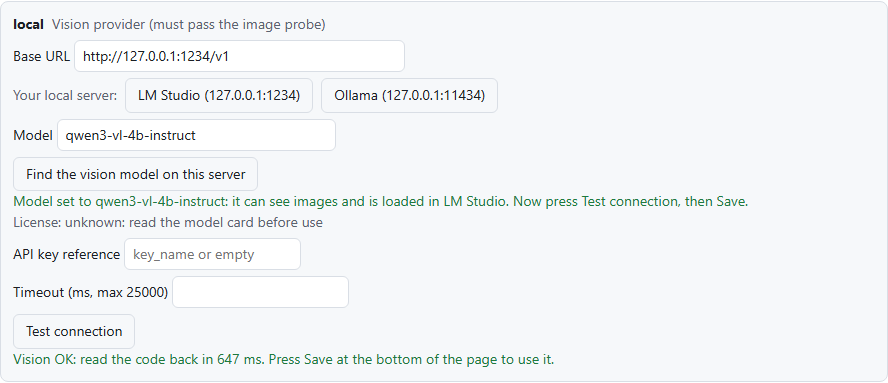
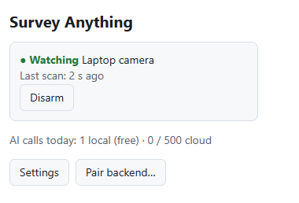

No server, no new hardware
It runs in Chrome. Your laptop's webcam is a camera, and so is any web page you can open: a vendor's camera portal, a Grafana board, a printer feed, a shop queue.
Free · open source · runs on your computer
Point it at a webcam or any browser tab, say what to watch for, and get a Telegram or email alert when it happens. A detector runs on your computer for free, and an AI model you choose confirms what it saw, before anyone is bothered.
How it works
Your webcam, or any tab: a camera's web page, a dashboard, a 3D printer feed.
Every 5 seconds a detector in your browser looks for the rule's trigger: a person, fire or smoke, motion, a change in an area.
Only when something looks off, a vision AI model looks at that one picture and answers your rule's question.
Telegram and email at once, one alert per event, with the model's one-line reason.
Example rule, built in: "Person left the camera view". While you sit at the laptop nothing is
sent anywhere. Walk away and, about ten seconds later, your phone gets: Person left the camera view.
Confirmed by local, confidence 98%.
Why it's different
It runs in Chrome. Your laptop's webcam is a camera, and so is any web page you can open: a vendor's camera portal, a Grafana board, a printer feed, a shop queue.
The detector runs on every frame for free; the AI is called once per event, not per frame. Cloud models get per-minute and daily caps with a hard stop.
Free on your own computer with LM Studio, Ollama, vLLM or llama.cpp, or in the cloud (Anthropic, OpenAI, OpenRouter, DeepSeek) with automatic failover. A built-in test proves a model can actually see before it is used.
A rule is a small JSON file: what triggers the detector and the question the AI answers. Eleven are built in. Open one, copy it, change the area or the question, add it as your own.
No account and no telemetry. With a local model, pictures never leave your computer, and API keys stay in your browser. Photos in alerts can be switched off.
Text inside the picture is treated as untrusted data and tested with planted instructions. Optional device actions run only after a person taps Approve on Telegram.
If no model answers or the budget is used up, you still get the alert, clearly labelled unconfirmed.
No face recognition and no identification: rule questions about who someone is are refused.
Compared with the usual free options
| Motion-detection apps | Self-hosted NVR with object detection | Cloud camera AI | Survany | |
|---|---|---|---|---|
| What you need | A camera and an app | An always-on machine and RTSP cameras | The vendor's cameras and app | Chrome and a webcam, or any web page |
| Watches any web page | No | No | No | Yes |
| Answers a question you write | No | Object classes only | On some paid plans | Yes, with any vision model |
| Shadows, lights, pets | Frequent false alarms | Fewer (object classes) | Fewer | Detector and AI must agree |
| Price | Free | Free software, your hardware | Often a subscription | Free with a local model; cloud calls capped |
| Video leaves your home | Depends on the app | No | Yes, to the vendor | No, with a local model |
Typical of each kind of tool; individual products differ.
Measured, not promised
Method and full results: BENCHMARKS.md.
Get started
Version 0.1.0 is a preview and not in the Chrome Web Store yet, so you build it once from the source. You need Chrome, Node.js 24 or later, Git and Telegram.
git clone https://github.com/PacifAIst/survany
cd survany
corepack enable
pnpm install
pnpm buildOpen chrome://extensions, turn on Developer mode, press Load unpacked and pick survany/apps/extension/dist. Accept the consent page and allow the camera.
Install LM Studio, download and load qwen3-vl-4b-instruct, and start its server (Developer tab). In the extension's Options, local card, press LM Studio and then Test connection.
In Telegram, message @BotFather, send /newbot and copy the token. Open your bot, press Start and send it "hi". Open https://api.telegram.org/bot<TOKEN>/getUpdates and copy the number after "chat":{"id":. In Options, tick Direct Telegram, paste the token and enter that chat ID.
Sign up at resend.com, create an API key, and in Options tick Direct email (Resend) with From onboarding@resend.dev and your sign-up address as the recipient.
Under Watch rules, tick Person left the camera view (or fire, a package at the door, a dashboard turning red…) and press Save.
Click the extension's icon and press Watch camera, or Watch this tab on any page. Walk away to test.


Ideas
Use it responsibly
Watch only places you are allowed to watch, tell the people who may be in view, and follow your local law. Survany is built to notice events, never to identify or track people. Responsible use · Privacy policy